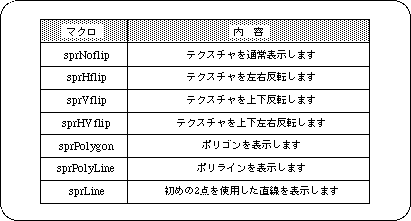

Return to previous page | Return to menu | Go to next page
The seventh parameter is “Dir”. Specify whether the object is a polygon or a texture, and if it is a texture, how to invert it.

Caution
Do not specify “sprHflip” or “sprVflip” if no texture is used for the object.
Specify “sprLine” as 4 points in the same way as other polygons (specify the first 2 points repeatedly).